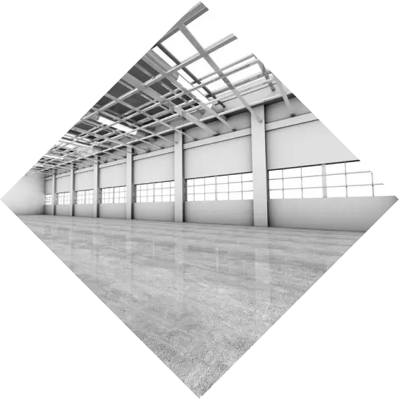

@@include('components/page-blocks/_head.html',{ "lang":"ru", "title":"Главная", "description":"", "keywords":"",})
@@include('components/page-blocks/_header2.html')
404
The page you are looking for can’t be found.
Visit our
homepage
or try
contact us

@@include('components/page-blocks/_scripts.html')